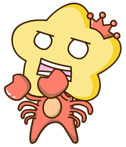
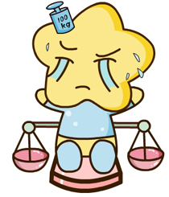
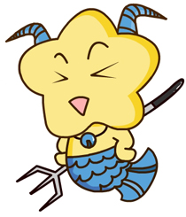
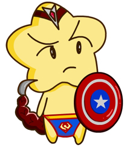
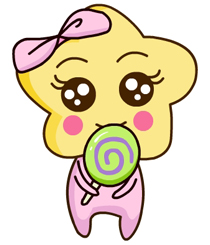

白羊座(3月21日-4月20)
白羊座的人热情冲动、爱冒险、慷慨、天不怕地不怕而且一旦下定决心，不到黄河心不死，排除万难的要达到目的。大部分属于白羊座的人的脾气都很差，不过只是炮仗颈，绝对不会放在心上，的天蝎座便正好是白羊座的相反。 |
巨蟹座(6月22日-7月22日)
巨蟹座的人往往充满了爱心，他们将母性的本质发挥到了极限。对他们来说，最重要的东西是家庭。他们往往就像蟹一样，在充满坚硬的外壳下面是柔软的内心。巨蟹座是最执着的星座，做事会一直坚持到底。 |
天秤座(9月24日-10月23日)
天秤座常常追求和平和谐的感觉，他们善于交谈，沟通能力极强是他们最大的优点。但他们最大的缺点，往往是犹豫不决。天秤座的人容易将自己的想法加诸到别人身上，天秤座的人要小心这点。 |
摩羯座(12月22日-1月20日)
摩羯座是十二星座中最有耐心，为事最小心、也是最善良的星座。他们做事脚踏实地，也比较固执，不达目的是不会放手的。他们的忍耐力也是出奇的强大，同时也非常勤奋。背负着很多的责任感.
|
金牛座(4月21日-5月21日)
金牛座是很保守的星座，喜欢稳定，不爱变动。在性格上则比较慢热，对工作、生活、环境都需要比较长的适应期。金牛座又往往是财富的向征，他们在投资理财方面常常有很独到的见解。 |
狮子座(7月23日-8月22日)
狮子座的人热情、阳光、大方是他们性格上最大的特色。与他们性格上的优点不同，他们爱面子、自信得有点儿自大，常常会很在乎别人对自己的看法，也常常会因此而使自己不快乐。
|
天蝎座(10月24日-11月22日) 天蝎座的人精力旺盛、热情、善妒，占有欲极强。他们想要每天过得非常充实，如果失去了目标，他们很难认真地投入精力。天蝎是记仇的，会不顾一切地打击仇人。
|
水瓶座(1月21日-2月19日)
水瓶座的人很聪明，他们最大的特点是创新，追求独一无二的生活，个人主义色彩很浓重的星座。他们对人友善又注重隐私。水瓶座绝对算得上是“友谊之星”。 |
双子座(5月22日-6月21日)
双子座的人往往喜好新鲜事物，他们有着小聪明，但做事常常不太专一。与双子座的人聊天也许会让你觉得很兴奋，因为他们脑子中那些新鲜的、稀奇古怪的东西会让有充满好奇。 |
处女座(8月23日-9月23日)
处女座追求完美，吹毛求疵是他们的特性。多数的处女座都很谦虚，但也因此给自己造成很大压力。处女座的人不喜欢闲着，对别人常常乐于服务。缺乏自信的处女座有时候组织能力较差。
|
射手座(11月23日-12月21日)
射手座的人就像那只在弦上的箭一样，他们主动出击。为人乐观、诚实、热情、喜欢挑战。射手是十二星座中的冒险家，热爱旅行、喜欢赌博。意志力薄弱是射手座天生的弱点。
|
双鱼座(2月20日-3月20日)
双鱼座是十二宫最后一个星座，他集合了所有星座的优缺点于一身，同时受水象星座的情绪化影响，使他们原来复杂的性格又添加了更复杂的一笔。双鱼座的人最大优点是有一颗善良的心。 |